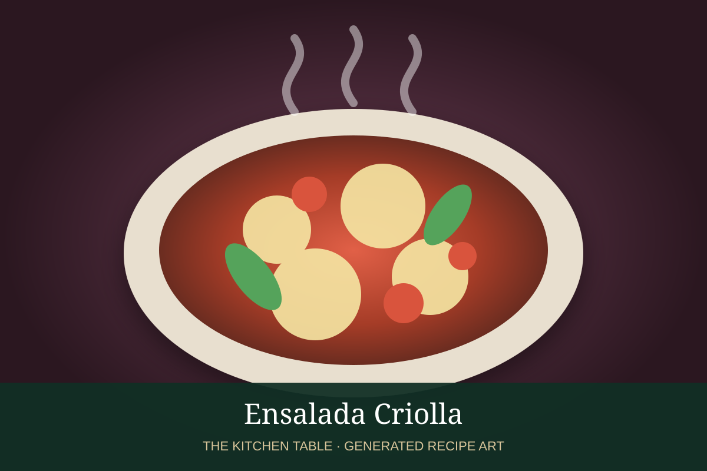

← Back to all recipes
SALAD · ARGENTINIAN
Ensalada Criolla
A bright Argentine salad of ripe tomatoes, onion, and bell pepper dressed simply with oil and vinegar.
15 minServes 4

Representative photo: E4024 / Wikimedia Commons, CC BY-SA 4.0.
Ingredients
- 4 ripe tomatoes, cut into wedges or chunks
- 1 small red or white onion, thinly sliced
- 1 red bell pepper, thinly sliced
- 2 tbsp extra-virgin olive oil
- 1 tbsp red-wine vinegar
- ½ tsp kosher salt
- Freshly ground black pepper
- 2 tbsp chopped parsley, optional
Preparation
- Place the tomatoes, onion, and bell pepper in a serving bowl.
- Whisk together olive oil, vinegar, salt, and pepper.
- Pour the dressing over the vegetables and toss gently.
- Let stand 10 minutes so the juices mingle with the dressing.
- Finish with parsley, if using, and serve with grilled meats.